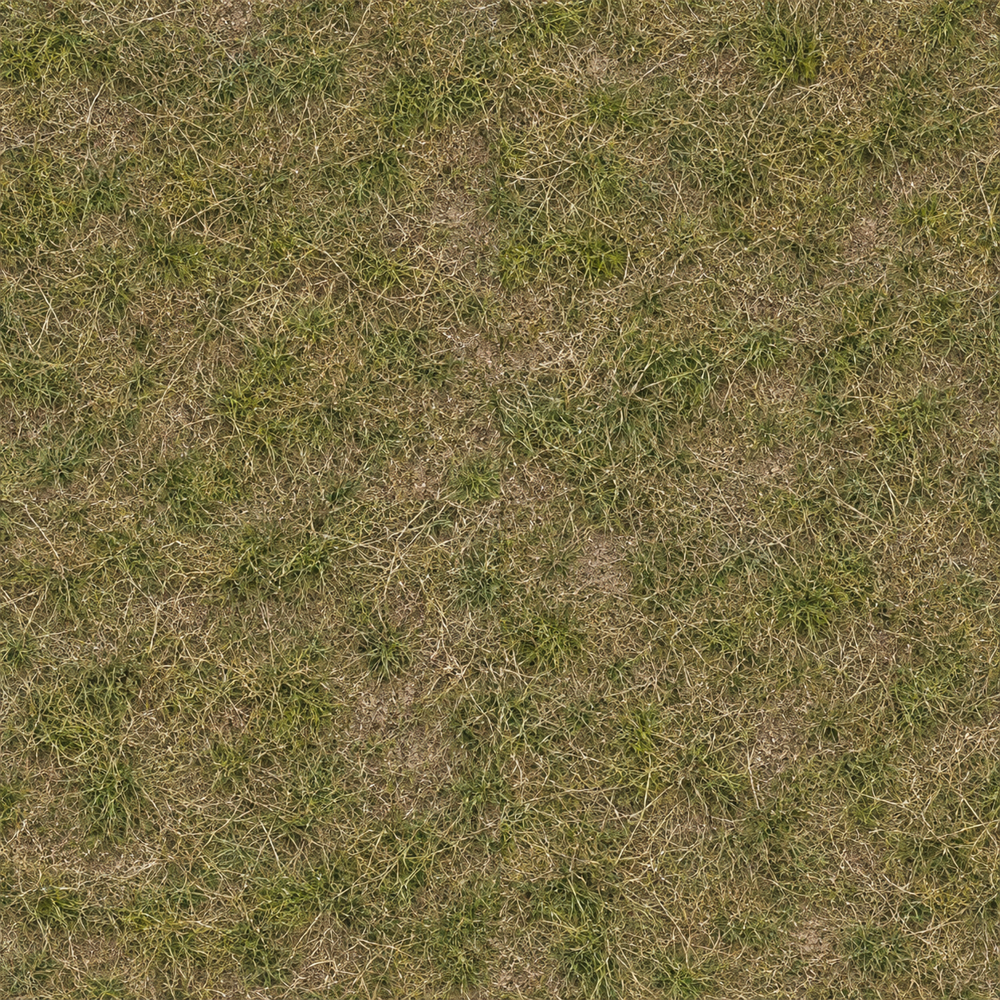
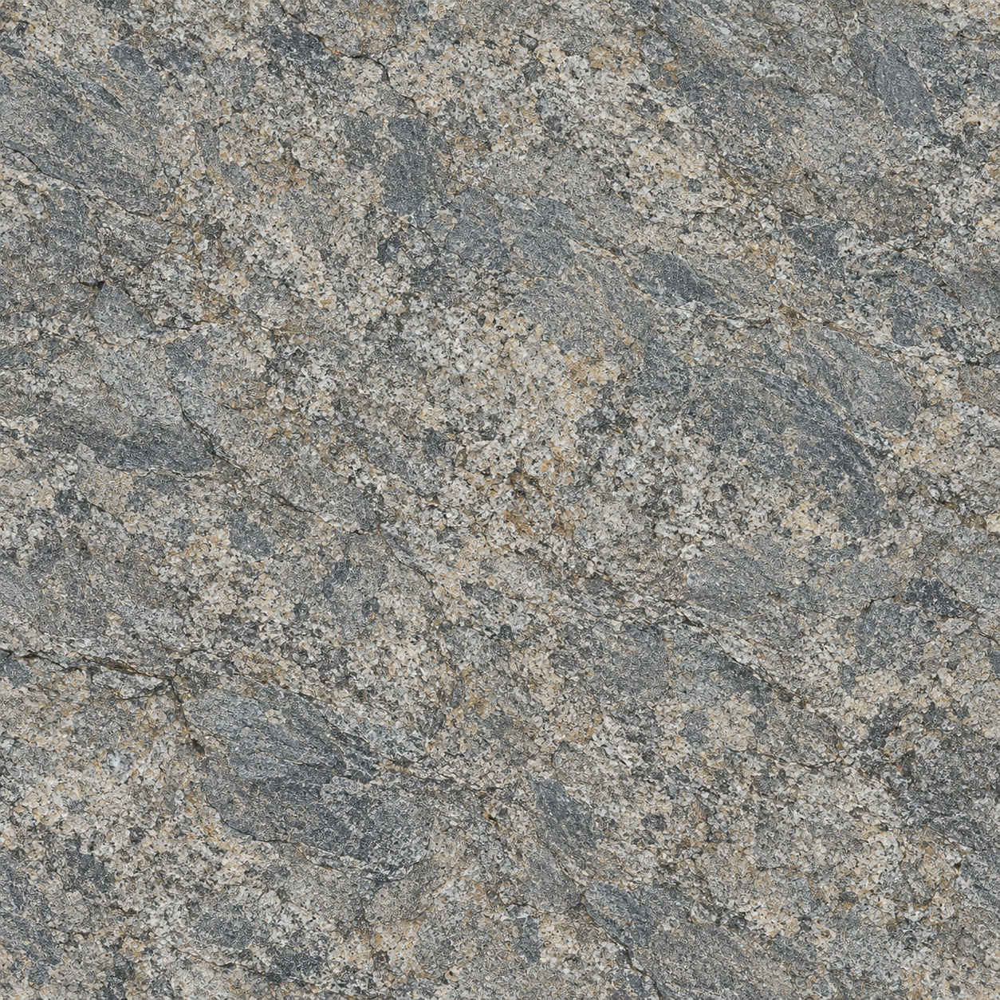
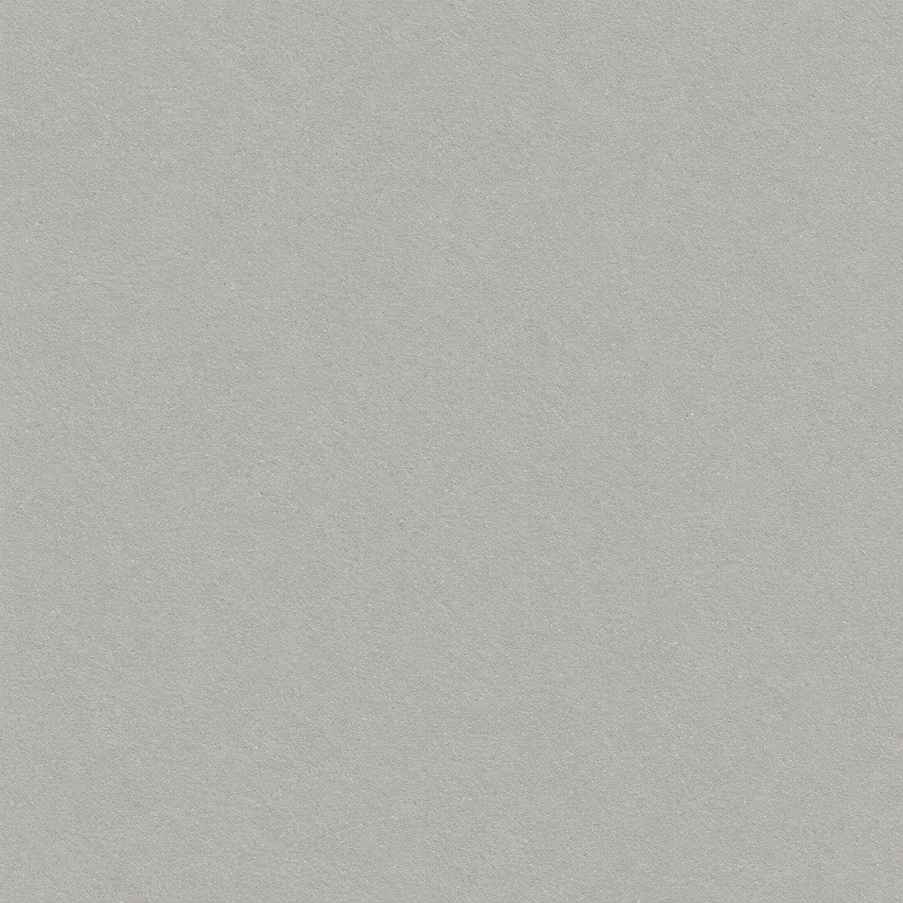
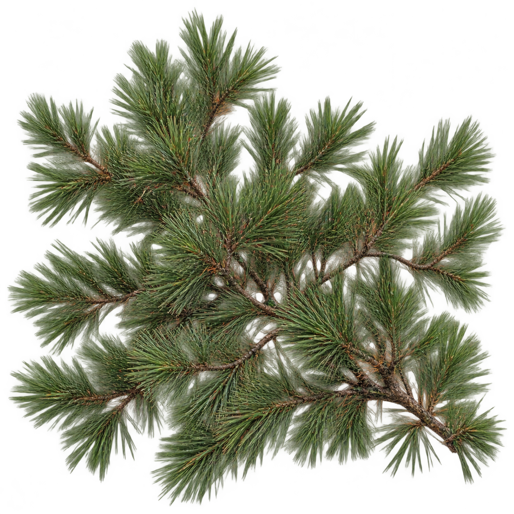

AEROSIM 0.3 / REAL UNITY RENDER / ART PASS V2
场景有了材质，
无人机有了结构。
这是已经接入可运行模拟器的美术升级，不是用 AI 效果图代替实际飞行画面。草地、岩石、外壳和针叶由美术子任务生成，地形、模型、天空、水面和阴影已在 Unity 中实现。
向高质量无人机模拟器靠近，但尚未达到 DJI 商业产品的模型、摄影测量材质与场景精修水平。没有使用 DJI 贴图、模型、商标；所有新场景图均为本地程序真实渲染。
实际飞行页面
既有操控、训练、暂停、返航、照片与回放流程保留。图在隔离 QA 档案中拍摄，不修改用户飞行记录。


ORIGINAL AIRCRAFT / POLYMER · METAL · OPTICS
无人机结构与材质
圆滑机身、电池接缝、折叠臂、通风口、电机、桨叶、导航灯和云台相机。外壳、金属与镜片分别使用不同光泽和金属度。飞行碰撞体与质量未变。

四个可飞行环境
沿用原任务坐标和安全训练走廊。海岸与峡谷有新地形、远山和岩石；城市与仓库增加结构细节。


傍晚与阴天
不同太阳高度、光照颜色、云量与距离雾；不改变飞行规则。水面为低成本近似，不模拟波浪碰撞或真实海洋流体。


可复用的原创素材
内置 imagegen 生成，原图均 1254 × 1254；前三张为 albedo，第四张为带真实 alpha 的针叶卡片。不是摄影测量 PBR 全套扫描。




iPad / iPhone：1024 上限、ASTC 6×6、mipmaps、降低植被数量与阴影预算。iOS 工程已导出；桌面截图和短测不能替代移动真机验收。